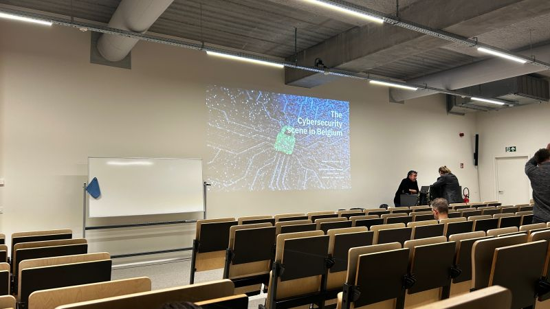

Tech & Meet: The Birth of NATO’s Cyber Defence
Op 2 december 2025 ging ik naar een Tech & Meet van Howest over “The Birth of NATO’s Cyber Defence”. De spreker was Martin De Pauw. Hij studeerde aan de Koninklijke Militaire School en begon in F16-avionica en stapte later over naar software, hardware en netwerken. Uiteindelijk hielp hij mee cyberspace vorm te geven binnen de NATO waar hij nu nog werkt. Door die achtergrond bracht hij veel praktijkervaring mee.
Hij opende met een straffe boodschap: cyber kent geen grenzen en maakt geen onderscheid in leeftijd, gender of afkomst. Het verbindt ons allemaal maar stelt ons ook allemaal bloot. Alles evolueert sneller dan ooit met nieuwe risico’s zoals “weaponized AI” en georganiseerde hackersgroepen.
De rode draad was hoe cyber bij de NATO van een ondersteunende IT-functie geëvolueerd is naar een volwaardig operationeel domein. In 2016 erkende de NATO cyberspace officieel als domein, naast land, zee en lucht. Een belangrijk punt was dat dreigingen niet altijd van buitenaf komen maar ook “insider threats” zijn gevaarlijk.
Wat me het meest bijbleef, is hoe sterk de NATO afhangt van samenwerking met partijen buiten het leger, zoals bedrijven en universiteiten. De technologie gaat zo snel dat het leger dat niet alleen kan bijhouden. Hij gaf ook mee dat niet alle landen even goed beveiligd zijn: ongeveer 20 van de 32, al wou hij niet zeggen welke. Volgens hem zijn de mensen vaak het moeilijkste en niet de tools: training, bewustzijn en vertrouwen tussen teams zijn zeer cruciaal.
Voor mij was de sessie technisch niet super diepgaand maar het was zeer interessant.